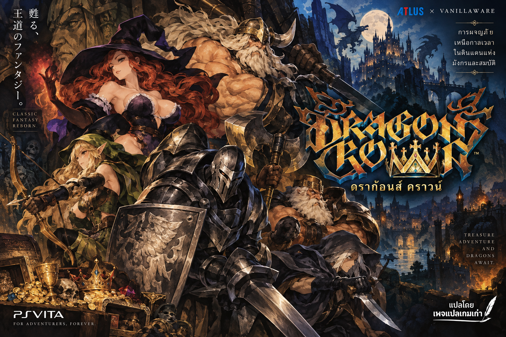

Dragon’s Crown
แพตช์ภาษาไทย
ฉบับร่าง 0.2PCSE00019 · 1.00Vita3K Windows
เกมนี้เกี่ยวกับอะไร?
Dragon’s Crown เป็นเกมแอ็กชัน RPG แบบ 2D มุมมองด้านข้าง เราเลือกตัวละครนักผจญภัย ออกเดินทางในดันเจี้ยน ต่อสู้กับมอนสเตอร์ เก็บอุปกรณ์ และพัฒนาความสามารถของตัวละคร
เล่นคนเดียวหรือร่วมทีมกับตัวละครอื่นได้ เนื้อเรื่องเกี่ยวกับการตามหาสมบัติ คำสาป และมังกรในอาณาจักรโบราณ
แพตช์นี้แปลข้อความไทย 8,695 รายการ อีก 49 รายการยังใช้ข้อความต้นฉบับ ไฟล์เกมจะถูกประมวลผลในเครื่องของคุณและไม่ถูกอัปโหลดขึ้นเซิร์ฟเวอร์
ใช้ไฟล์ต้นฉบับที่ยังไม่ลงแพตช์: eboot.bin และ DRACRO.CPK ระบบตรวจรุ่นจากเนื้อหาไฟล์ ใช้ Chrome หรือ Edge บนคอมพิวเตอร์ และเปิดผ่านเว็บไซต์ HTTPS หรือ localhost เตรียมพื้นที่ประมาณ 2 GB สำหรับผลลัพธ์กับสำรองต้นฉบับ
หากกำลังใช้ชุดไทยอยู่ ให้เลือกไฟล์สำรองก่อนติดตั้งแพตช์ ไม่ใช่ไฟล์ในเกมที่แก้แล้ว
สร้างไฟล์ภาษาไทย
ทำทีละไฟล์ให้ครบ 2 ไฟล์ และดาวน์โหลดผลลัพธ์ก่อนเลือกไฟล์ถัดไป
กำลังโหลดเครื่องมือ…
ดาวน์โหลดบันทึกไฟล์ให้เสร็จก่อนเลือกไฟล์ถัดไป
สร้างสำเร็จ 0 / 2 ไฟล์
เพิ่มการตั้งชื่อภาษาไทยแบบเลือกตัวอักษร และแก้สระบนล่างกับวรรณยุกต์ให้ซ้อนถูกตำแหน่ง ตัวอักษรที่พิมพ์ต่อจะเว้นระยะตามปกติ
หากใช้แพตช์รุ่นก่อน ให้สร้างไฟล์ทั้ง 2 ไฟล์ใหม่จากต้นฉบับที่สำรองไว้ แล้วนำไปแทนไฟล์ในเกม
วิธีแพตช์แบบสั้น ๆ
- เลือก
eboot.binแล้วกดสร้างไฟล์ไทย จากนั้นดาวน์โหลด - เลือก
DRACRO.CPKแล้วกดสร้างไฟล์ไทย จากนั้นดาวน์โหลด - ปิด Vita3K และสำรองไฟล์เดิมไว้
- นำไฟล์ไทยทั้ง 2 ไฟล์ไปใส่ใน
ux0/app/PCSE00019แล้วเปิดเกม
ถ้าจะถอนแพตช์ ให้ลบไฟล์ไทยแล้วคืนไฟล์ต้นฉบับที่สำรองไว้
ยังไม่ได้ตรวจคำแปลและการตัดบรรทัดตลอดทั้งเกม ชุดทดลองเมนูแสดงไทยได้ และชุดรวมบูตใน Vita3K ได้แล้ว แต่ยังไม่ผ่านการทดสอบเล่นจบเกม เพิ่มคีย์บอร์ดตั้งชื่อภาษาไทยและแก้ตำแหน่งสระบนล่างกับวรรณยุกต์แล้ว โดยผู้ทดสอบยืนยันว่าใช้งานได้ใน Vita3K ชื่อจำกัด 8 ช่อง รวมสระและวรรณยุกต์ การป้อนข้อความไทยในช่องอื่นยังไม่รองรับ และยังไม่ยืนยันการใช้งานกับเครื่อง PS Vita จริง